배우기 전에 먼저 해 보세요. 틀려도 괜찮아요.
Letzte Woche wurden neue Laptops bestellt.는 언제의 일일까요?
wurde와 Partizip은 지난 일의 Passiv예요.
Ich bin dafür.는 무슨 뜻일까요?
반대는 Ich bin dagegen.이에요.
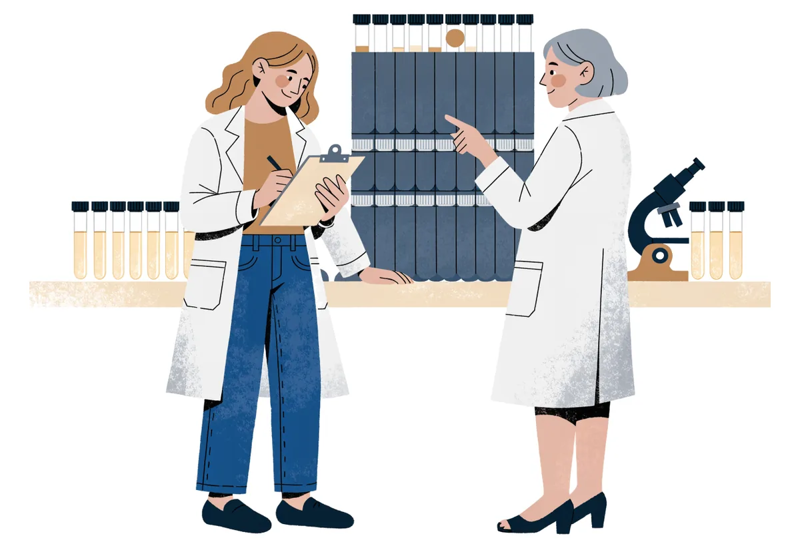
일하는 방식은 여러 가지예요. 사무실, 재택근무, 고용된 자리, 혼자 하는 일마다 좋은 점과 나쁜 점이 있어요. 이 과에서는 일의 과정을 Passiv로 설명해요. 지난 일을 말하는 wurde gemacht와 조동사가 들어간 muss gemacht werden을 배우고, 회의에서 의견을 말하고 남의 의견에 반응하는 법을 익혀요.
문법 Passiv Präsens und Präteritum, Passiv mit Modalverben
과제대학인턴 자리에서 맡은 일의 과정 설명하기
과제직장재택근무 도입에 대해 회의에서 의견 말하기
이 과를 마치면 일하는 방식의 장단점을 견주고, 일의 과정을 설명하고, 의견을 말하고 반응할 수 있어요.
이 과에서 쓸 말이에요. 눌러서 먼저 들어 보세요.
배우기 전에 먼저 해 보세요. 틀려도 괜찮아요.
Letzte Woche wurden neue Laptops bestellt.는 언제의 일일까요?
wurde와 Partizip은 지난 일의 Passiv예요.
Ich bin dafür.는 무슨 뜻일까요?
반대는 Ich bin dagegen.이에요.
Lektion 4의 낱말 다섯 개를 다시 떠올려 보세요.
12월의 금요일 저녁, WG 부엌이에요. Lena는 이번 주에 제약 회사 실험실에서 인턴을 시작했어요.
들으면서 찾아보세요. 어제 오전에는 왜 일을 할 수 없었나요?
화요일 오전, 팀 회의예요. 회사가 1월부터 재택근무를 도입하려고 해요. Frau Hoffmann이 팀의 생각을 물어요.
들으면서 찾아보세요. Dohyun은 재택근무의 어떤 점이 아쉽다고 하나요?
어학원 수업 시간이에요. Sora는 지난 토요일에 B1 시험을 봤어요. 오늘의 주제는 일하는 방식이에요.
들으면서 찾아보세요. Frau Becker는 Sora에게 어떤 자리를 권하나요?
세 대화를 듣고 답하세요.
실험실에서 아침마다 가장 먼저 하는 일은 무엇인가요?
Lena darf die Ergebnisse selbst in den Computer eintragen.
결과는 직원만 기입할 수 있어요.
어제 오전에는 왜 일을 할 수 없었나요?
Dohyun은 재택근무의 어떤 점이 아쉽다고 하나요?
Die neuen Laptops müssen noch bestellt werden.
지난주에 벌써 주문했어요.
재택근무를 할지는 언제 정하나요?
Sora는 무엇이 걱정인가요?
Frau Becker schlägt eine Stelle in Teilzeit vor.
낱말 51개예요. 낱말이나 예문 앞의 단추를 누르면 소리가 나요. 명사는 der, die, das를 색으로 구분했어요.
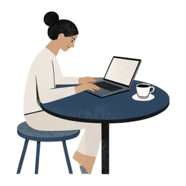
das Homeoffice 재택근무
Am Montag arbeite ich im Homeoffice.월요일에는 집에서 일해요.
der Arbeitsplatz, die Arbeitsplätze 일자리, 일하는 자리
Mein Arbeitsplatz ist am Fenster.제 자리는 창가예요.
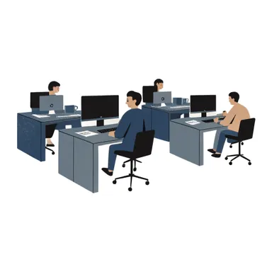
das Großraumbüro, die Großraumbüros 여럿이 쓰는 큰 사무실
Im Großraumbüro ist es oft laut.큰 사무실은 시끄러울 때가 많아요.
der Arbeitgeber, die Arbeitgeber 고용주, 회사
Der Arbeitgeber zahlt die Versicherung.보험은 회사가 내요.
der Arbeitnehmer, die Arbeitnehmer 직원, 고용된 사람
Arbeitnehmer haben bezahlten Urlaub.직원에게는 급여가 나오는 휴가가 있어요.
angestellt 고용된, 회사에 속한
Ich bin bei einer Firma angestellt.저는 회사에 다녀요.
selbstständig 혼자 일하는, 자영업의
Sora möchte selbstständig arbeiten.Sora는 혼자 일하고 싶어 해요.
die Probezeit 수습 기간
Die Probezeit dauert sechs Monate.수습 기간은 여섯 달이에요.
der Betriebsrat, die Betriebsräte 직원 대표 기구
Der Betriebsrat wurde informiert.직원 대표 기구에 알렸어요.
der Urlaubstag, die Urlaubstage 휴가 날
Ich habe dreißig Urlaubstage im Jahr.저는 한 해에 휴가가 30일이에요.
der Arbeitsweg, die Arbeitswege 출퇴근길
Mein Arbeitsweg dauert eine halbe Stunde.제 출근길은 30분 걸려요.
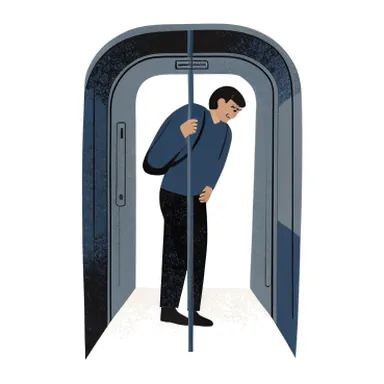
pendeln (ist gependelt) 먼 길을 통근하다
Ich pendle jeden Tag nach Frankfurt.저는 날마다 프랑크푸르트로 통근해요.
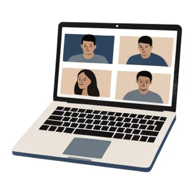
die Videokonferenz, die Videokonferenzen 화상 회의
Um zehn habe ich eine Videokonferenz.10시에 화상 회의가 있어요.
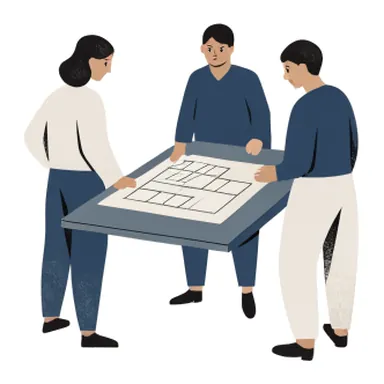
zusammenarbeiten (hat zusammengearbeitet) 함께 일하다
Wir arbeiten gut zusammen.우리는 손발이 잘 맞아요.
die Zusammenarbeit 함께 하는 일, 협업
Danke für die gute Zusammenarbeit.함께 잘 일해 줘서 고마워요.
produktiv 일이 잘되는
Zu Hause bin ich produktiver.저는 집에서 일이 더 잘돼요.
freiwillig 원하는 사람만 하는
Das Homeoffice ist freiwillig.재택근무는 원하는 사람만 해요.
die Sicherheit 안정, 안전
Am Anfang brauche ich Sicherheit.처음에는 안정된 자리가 필요해요.
der Ablauf, die Abläufe 과정, 일의 순서
Ich erkläre dir den Ablauf.일의 순서를 설명해 줄게요.
der Schritt, die Schritte 단계
Der erste Schritt ist die Kontrolle.첫 단계는 확인이에요.
der Auftrag, die Aufträge 일거리, 주문
Wir haben einen neuen Auftrag bekommen.새 일거리를 받았어요.
bearbeiten (hat bearbeitet) 처리하다
Die Bestellung wird heute bearbeitet.그 주문은 오늘 처리해요.
prüfen (hat geprüft) 살펴보다, 검토하다
Zuerst wird die Bestellung geprüft.먼저 주문을 살펴봐요.
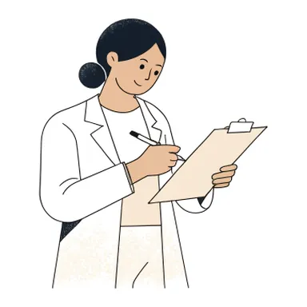
kontrollieren (hat kontrolliert) 확인하다, 점검하다
Die Ergebnisse werden kontrolliert.결과를 확인해요.
herstellen (hat hergestellt) 만들다, 생산하다
Die Firma stellt Maschinen her.그 회사는 기계를 만들어요.
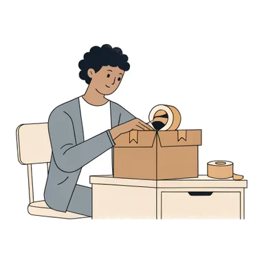
verpacken (hat verpackt) 포장하다
Die Pakete werden von uns verpackt.소포는 우리가 포장해요.
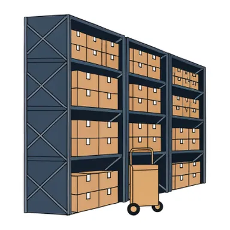
das Lager, die Lager 창고
Die Ware ist im Lager.물건은 창고에 있어요.
einführen (hat eingeführt) 도입하다
Die Firma führt Homeoffice ein.그 회사는 재택근무를 도입해요.
das Ergebnis, die Ergebnisse 결과
Die Ergebnisse kommen im Januar.결과는 1월에 나와요.
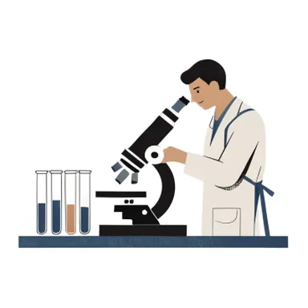
das Labor, die Labore 실험실
Lena arbeitet im Labor.Lena는 실험실에서 일해요.
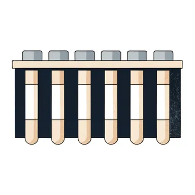
die Probe, die Proben 시료
Die Proben werden morgens geliefert.시료는 아침에 들어와요.
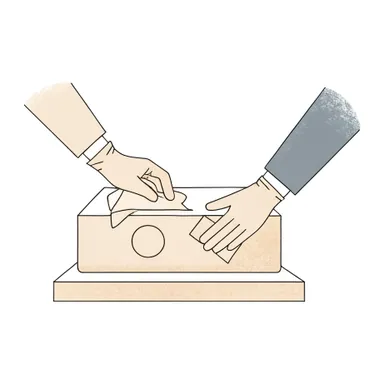
reinigen (hat gereinigt) 세척하다, 깨끗이 하다
Die Geräte müssen gereinigt werden.기기를 세척해야 해요.
testen (hat getestet) 시험하다
Die Maschine wird morgen getestet.그 기계는 내일 시험해요.
eintragen (du trägst ein, hat eingetragen) 기입하다
Tragen Sie Ihren Namen in die Liste ein.명단에 이름을 적어 주세요.
einarbeiten (hat eingearbeitet) 일을 가르쳐 주다
Ich wurde gut eingearbeitet.일을 잘 배웠어요.
die Praktikantin, die Praktikantinnen 인턴 (여자)
Die Praktikantin bereitet die Proben vor.인턴이 시료를 준비해요.
meiner Meinung nach 제 생각에는
Meiner Meinung nach ist das eine gute Idee.제 생각에는 좋은 생각이에요.
das Argument, die Argumente 근거
Das ist ein gutes Argument.좋은 근거네요.
dafür 찬성하는
Ich bin dafür.저는 찬성이에요.
dagegen 반대하는
Drei Kollegen sind dagegen.동료 세 명이 반대해요.
einerseits 한편으로는
Einerseits spart man Zeit.한편으로는 시간을 아껴요.
andererseits 다른 한편으로는
Andererseits fehlt der Kontakt.다른 한편으로는 사람들과 만날 일이 없어요.
außerdem 게다가
Außerdem haben Sie bezahlte Urlaubstage.게다가 급여가 나오는 휴가도 있어요.
allerdings 다만, 그렇지만
Allerdings braucht man zu Hause einen ruhigen Platz.다만 집에 조용한 자리가 있어야 해요.
zustimmen (hat zugestimmt) 같은 생각이다, 동의하다
Da stimme ich Ihnen zu.그 점은 저도 같은 생각이에요.
widersprechen (du widersprichst, hat widersprochen) 다른 생각을 말하다, 반박하다
Da muss ich widersprechen.그 점은 생각이 달라요.
überzeugen (hat überzeugt) 설득하다
Das Argument überzeugt mich.그 근거를 들으니 수긍이 가요.
die Entscheidung, die Entscheidungen 결정
Die Entscheidung kommt am Freitag.결정은 금요일에 나요.
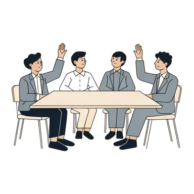
abstimmen (hat abgestimmt) 투표로 정하다
Am Freitag wird abgestimmt.금요일에 투표해요.
die Umfrage, die Umfragen 설문
Wir machen eine Umfrage im Team.팀에서 설문을 해요.
die Mehrheit 다수
Die Mehrheit ist dafür.찬성하는 사람이 더 많아요.
이 과의 낱말로 여덟 문제를 풀어요.
줄을 누르면 소리가 나요. 지금의 일은 wird, 지난 일은 wurde로 말해요.
줄을 누르면 소리가 나요. Partizip 뒤에 werden이 문장 끝에 와요.
규칙
A2.2에서 배운 Passiv는 일의 과정을 설명할 때 가장 많이 써요. 누가 하는지보다 무슨 일이 어떤 순서로 일어나는지가 중요하기 때문이에요. werden을 주어에 맞추고 Partizip II를 문장 끝에 둬요. 하는 사람을 밝히고 싶으면 von과 Dativ로 말해요.
| 순서 | 문장 |
|---|---|
| zuerst | Die Bestellung wird geprüft. |
| dann | Die Ware wird geholt. |
| danach | Das Paket wird verpackt. |
| am Ende | Der Kunde wird informiert. |
주의 주어가 없는 Passiv도 있어요. Am Freitag wird abgestimmt. 금요일에 투표한다는 뜻이에요. Hier wird viel gearbeitet. 여기서는 일을 많이 해요. 사람들이 하는 일을 통틀어 말할 때 써요.
규칙을 보고 바로 확인해 보세요.
Am Freitag … im Team abgestimmt. 빈칸에 알맞은 말은 무엇인가요?
규칙
지난 일을 Passiv로 말할 때는 werden을 Präteritum으로 바꿔요. wird는 wurde, werden은 wurden이 돼요. Partizip II는 그대로 문장 끝에 있어요. 말할 때도 글로 쓸 때도 이 모양을 써요.
| 주어 | werden | wurde |
|---|---|---|
| ich | werde | wurde |
| du | wirst | wurdest |
| er, sie, es | wird | wurde |
| wir | werden | wurden |
| ihr | werdet | wurdet |
| sie, Sie | werden | wurden |
주의 한국어로 옮길 때는 '~되었다'보다 '~했다'나 '~받았다'가 자연스러워요. Ich wurde eingeladen.은 '초대받았어요', Mir wurde alles gezeigt.는 '다 보여 줬어요'예요. wurde와 würde를 헷갈리지 마세요. 점이 없는 wurde가 지난 일이에요.
규칙을 보고 바로 확인해 보세요.
Der Betriebsrat … gestern informiert. 빈칸에 알맞은 말은 무엇인가요?
규칙
해야 하는 일, 해도 되는 일, 할 수 있는 일을 Passiv로 말할 때는 조동사를 써요. 조동사를 주어에 맞추고, 문장 끝에 Partizip II와 werden을 차례로 둬요. werden은 바뀌지 않고 늘 Infinitiv예요.
| 조동사 | 끝 | 뜻 |
|---|---|---|
| muss | gemacht werden | 해야 한다 |
| kann | gemacht werden | 할 수 있다 |
| darf nicht | gemacht werden | 하면 안 된다 |
| soll | gemacht werden | 하기로 되어 있다 |
주의 규칙과 지시를 적은 글에서 자주 봐요. Die Tür muss geschlossen werden. Hier darf nicht geraucht werden. 지난 일은 조동사만 Präteritum으로 바꿔요. Das Gerät musste repariert werden.
규칙을 보고 바로 확인해 보세요.
Kaputte Ware darf nicht … 뒤에 올 말은 무엇인가요?
규칙
Aktiv 문장은 누가 하는지를 앞세워요. Passiv 문장은 무엇이 어떻게 되는지를 앞세워요. Aktiv 문장의 Akkusativ가 Passiv 문장의 주어가 돼요. 하는 사람은 빼거나 von으로 덧붙여요.
| 모양 | 보기 |
|---|---|
| Aktiv | Wir verpacken die Pakete. |
| Passiv | Die Pakete werden verpackt. |
| Passiv mit von | Die Pakete werden von uns verpackt. |
주의 내가 한 일을 말할 때는 Aktiv가 자연스러워요. Ich bereite die Proben vor. 일터의 정해진 순서와 규칙을 말할 때는 Passiv가 자연스러워요. Die Proben werden morgens geliefert.
규칙을 보고 바로 확인해 보세요.
누가 하는지 모르거나 중요하지 않을 때 알맞은 문장은 무엇인가요?
듣고 알맞은 것을 고르세요.
결과는 누가 확인하나요?
Die Ergebnisse werden von der Laborleiterin kontrolliert.
노트북은 어떻게 됐나요?
Letzte Woche wurden zwanzig neue Laptops bestellt.
기계는 어떤가요?
Die Maschinen können nicht von zu Hause getestet werden.
Sora는 무슨 말을 하나요?
Einerseits möchte ich frei sein. Andererseits brauche ich Sicherheit.
금요일에 Frau Hoffmann이 팀에 음성 메시지를 남겼어요. 듣고 답하세요.
Das Ergebnis
Frau Hoffmann Guten Tag, hier ist Hoffmann. Ich habe eine Nachricht für das ganze Team.
Frau Hoffmann Heute Vormittag wurde abgestimmt. Vierzehn Kolleginnen und Kollegen waren dafür, drei dagegen.
Frau Hoffmann Ab dem zehnten Januar kann also zwei Tage pro Woche zu Hause gearbeitet werden.
Frau Hoffmann Dienstag und Donnerstag sind feste Bürotage. Die Laptops werden nächste Woche verteilt.
Frau Hoffmann Bitte tragen Sie Ihre Homeoffice-Tage bis Mittwoch in die Liste ein.
Wie viele Kolleginnen und Kollegen waren dafür?
Ab wann kann zu Hause gearbeitet werden?
Am Dienstag können alle zu Hause arbeiten.
화요일과 목요일은 사무실에 나오는 날이에요.
Was sollen alle bis Mittwoch tun?
온라인 가게에서 새 인턴에게 주는 안내예요. 읽고 답하세요.
So wird bei uns eine Bestellung bearbeitet
Willkommen im Praktikum! Das ist der Ablauf:
1. Die Bestellung wird im Computer geprüft. Ist alles im Lager?
2. Die Ware wird aus dem Lager geholt und kontrolliert.
3. Das Paket wird verpackt, und die Rechnung wird in das Paket gelegt.
4. Um 15 Uhr werden alle Pakete abgeholt.
5. Der Kunde wird per E-Mail informiert.
Wichtig: Kaputte Ware darf nicht verschickt werden. Sie muss sofort gemeldet werden.
Was wird zuerst gemacht?
Die Rechnung wird mit der Post geschickt.
소포 안에 넣어요.
Wann werden die Pakete abgeholt?
Wie wird der Kunde informiert?
Kaputte Ware muss gemeldet werden.
wird, werden, wurde, wurden 가운데 알맞은 것을 고르세요.
Jeden Morgen die Proben geliefert.
아침마다 시료가 들어와요.
Gestern ein Gerät repariert.
어제 기기 하나를 고쳤어요.
Letzte Woche zwanzig Laptops bestellt.
지난주에 노트북 스무 대를 주문했어요.
Am Freitag im Team abgestimmt.
금요일에 팀에서 투표해요.
Ich am ersten Tag zum Essen eingeladen.
저는 첫날에 식사 초대를 받았어요.
Die Ergebnisse im Januar verschickt.
결과는 1월에 보내 줘요.
조동사가 들어간 Passiv예요. 알맞은 것을 고르세요.
Die Geräte müssen jeden Abend .
기기는 저녁마다 세척해야 해요.
Die Maschinen können nicht von zu Hause .
기계는 집에서 시험할 수 없어요.
Das muss noch .
그건 아직 정해야 해요.
Kaputte Ware darf nicht .
망가진 물건은 보내면 안 돼요.
Die Gespräche mit Kunden müssen im Büro .
고객과의 상담은 사무실에서 해야 해요.
괄호 안의 동사를 Partizip II로 쓰세요.
Die Proben werden morgens . (liefern)
시료는 아침에 들어와요.
Gestern wurde ein Gerät . (reparieren)
어제 기기 하나를 고쳤어요.
Die Laptops wurden letzte Woche . (bestellen)
노트북은 지난주에 주문했어요.
Ich wurde zum Mittagessen . (einladen)
점심 초대를 받았어요.
Am Freitag wird . (abstimmen)
금요일에 투표해요.
낱말을 순서대로 눌러 문장을 만드세요.
어제 기기 하나를 고쳤어요.
기기는 저녁마다 세척해야 해요.
먼저 주문을 살펴봐요.
그건 아직 정해야 해요.
면접에 오라는 연락을 받았어요.
의견을 말할 때 쓰는 말이에요. 알맞은 것을 고르세요.
Meinung nach ist das eine gute Idee.
제 생각에는 좋은 생각이에요.
Einerseits spart man Zeit. fehlt der Kontakt zu den Kollegen.
한편으로는 시간을 아껴요. 다른 한편으로는 동료들과 만날 일이 없어요.
Da stimme ich Ihnen .
그 점은 저도 같은 생각이에요.
Ich bin , weil ich dann weniger pendeln muss.
통근을 덜 해도 되니까 저는 찬성이에요.
Das Homeoffice ist praktisch. braucht man zu Hause einen ruhigen Platz.
재택근무는 편해요. 다만 집에 조용한 자리가 있어야 해요.
어울리는 말을 짝지으세요.
듣고 그대로 써 보세요.
Gestern wurde ein Gerät repariert. 어제 기기 하나를 고쳤어요.
Das muss noch geklärt werden. 그건 아직 정해야 해요.
Meiner Meinung nach ist das eine gute Idee. 제 생각에는 좋은 생각이에요.
Zuerst wird die Bestellung geprüft. 먼저 주문을 살펴봐요.
Dann wird die Ware aus dem Lager geholt. 그다음에 창고에서 물건을 가져와요.
Am Ende wird der Kunde informiert. 마지막에 고객에게 알려요.
Das muss sofort gemeldet werden. 그건 바로 알려야 해요.
Meiner Meinung nach ist das eine gute Idee. 제 생각에는 좋은 생각이에요.
Ich bin dafür. 저는 찬성이에요.
Ich bin dagegen. 저는 반대예요.
Ich finde, dass wir das testen sollten. 한번 해 보는 게 좋다고 생각해요.
Ein Vorteil ist, dass man Zeit spart. 좋은 점은 시간을 아낀다는 거예요.
Ein Nachteil ist, dass der Kontakt fehlt. 나쁜 점은 사람들과 만날 일이 없다는 거예요.
Einerseits ist es praktisch, andererseits ist man allein. 한편으로는 편하지만 다른 한편으로는 혼자예요.
Allerdings gibt es auch Probleme. 다만 곤란한 점도 있어요.
Da stimme ich Ihnen zu. 그 점은 저도 같은 생각이에요.
Das sehe ich auch so. 저도 그렇게 봐요.
Das sehe ich anders. 저는 다르게 봐요.
Da muss ich widersprechen. 그 점은 생각이 달라요.
Wie könnte das gelöst werden? 어떻게 풀 수 있을까요?
Es könnten feste Bürotage vereinbart werden. 사무실에 나오는 날을 정하면 어떨까요?
Wann wird entschieden? 언제 결정해요?
Das muss noch geklärt werden. 그건 아직 정해야 해요.
과제 고르기
역할 대화와 말하기, 쓰기 과제는 대학 생활과 직장 생활 두 가지예요. 하나를 고르면 다음 과에서도 그쪽 과제가 나와요. 언제든 바꿀 수 있어요.
대화 A에서 역할을 하나 고르세요. 상대의 말은 음성으로 나오고, 내 차례에는 직접 말해요.
대화 B에서 역할을 하나 고르세요. 상대의 말은 음성으로 나오고, 내 차례에는 직접 말해요.
내가 일하거나 공부하는 방식을 떠올리고 칸을 채우세요. 완성된 문장을 소리 내어 읽어 보세요.
Ich arbeite in einem kleinen Büro.
Ein Vorteil ist für mich: die netten Kollegen.
Ein Nachteil ist für mich: der lange Arbeitsweg.
Ich würde gern zwei Tage pro Woche zu Hause arbeiten.
나는 온라인 가게에서 인턴을 하고 있어요. 오늘 새 인턴이 왔고, 주문을 어떻게 처리하는지 물어요.
순서는 이래요. 먼저 컴퓨터에서 주문을 살펴봐요. 그다음에 창고에서 물건을 가져와서 확인해요. 인턴들이 소포를 포장하고, 계산서를 소포 안에 넣어요. 소포는 날마다 15시에 가져가요. 망가진 물건은 보내면 안 되고, 바로 알려야 해요.
새 인턴이 물어요. 쪽지를 보고 답하세요. 질문을 듣고 소리 내어 답한 뒤 예시 답과 비교해 보세요.
Ich bin neu hier. Was wird zuerst gemacht, wenn eine Bestellung kommt? 저는 새로 왔어요. 주문이 들어오면 무엇을 가장 먼저 해요?
Zuerst wird die Bestellung im Computer geprüft.
Und dann? 그다음에는요?
Dann wird die Ware aus dem Lager geholt und kontrolliert.
Wer verpackt die Pakete? 소포는 누가 포장해요?
Die Pakete werden von uns verpackt. Die Rechnung wird in das Paket gelegt.
Wann werden die Pakete abgeholt? 소포는 언제 가져가요?
Jeden Tag um fünfzehn Uhr.
Und wenn etwas kaputt ist? 망가진 게 있으면요?
Kaputte Ware darf nicht verschickt werden. Sie muss sofort gemeldet werden.
Mein Praktikumsbericht
인턴으로 맡은 일의 과정을 짧은 보고서로 써 보세요. 일곱 문장쯤 써요.
In meinem Praktikum arbeite ich bei einem Onlineshop. Jeden Morgen werden zuerst die neuen Bestellungen geprüft. Dann wird die Ware aus dem Lager geholt und kontrolliert. Die Pakete werden von den Praktikanten verpackt. Um 15 Uhr werden sie abgeholt, und die Kunden werden per E-Mail informiert. Am ersten Tag wurde mir alles gezeigt, und ich wurde sehr gut eingearbeitet. Kaputte Ware muss sofort gemeldet werden. Die Arbeit macht mir Spaß, weil ich jeden Tag etwas Neues lerne.
다 쓴 뒤에 확인해 보세요.
회사가 일주일에 이틀 재택근무를 도입하려고 해요. 회의에서 팀장이 의견을 물어요.
나는 찬성이에요. 좋은 점은 출퇴근 시간이 없어지고 집에서 더 집중할 수 있다는 거예요. 나쁜 점은 동료들과 만날 일이 없어진다는 거예요. 그래서 화요일과 목요일은 모두 사무실에 나오자고 제안하려고 해요. 고객과의 상담은 계속 사무실에서 해야 한다고 생각해요.
팀장이 물어요. 쪽지를 보고 답하세요. 질문을 듣고 소리 내어 답한 뒤 예시 답과 비교해 보세요.
Bei uns soll Homeoffice eingeführt werden. Was meinen Sie? 우리 회사에 재택근무를 도입하려고 해요. 어떻게 생각하세요?
Meiner Meinung nach ist das eine gute Idee. Ich bin dafür.
Welche Vorteile sehen Sie? 어떤 좋은 점이 있다고 보세요?
Der Arbeitsweg fällt weg, und zu Hause kann man konzentrierter arbeiten.
Gibt es auch Nachteile? 나쁜 점도 있나요?
Ja. Einerseits spart man Zeit, andererseits fehlt der Kontakt zu den Kollegen.
Wie könnte das gelöst werden? 어떻게 풀 수 있을까요?
Es könnten feste Bürotage vereinbart werden, zum Beispiel Dienstag und Donnerstag.
Und die Gespräche mit den Kunden? 고객과의 상담은요?
Die müssen weiter im Büro geführt werden.
Meine Meinung zum Homeoffice
회의에 앞서 팀장에게 재택근무에 대한 의견을 메일로 써 보세요. 일곱 문장쯤 써요.
Sehr geehrte Frau Hoffmann, vielen Dank für die Informationen zum Homeoffice. Meiner Meinung nach ist die neue Regelung eine gute Idee. Einerseits fällt der Arbeitsweg weg, und man kann zu Hause konzentrierter arbeiten. Andererseits fehlt der Kontakt zu den Kollegen. Deshalb schlage ich vor, dass feste Bürotage vereinbart werden. Gespräche mit Kunden müssen weiter im Büro geführt werden. Außerdem muss noch geklärt werden, wer die Kosten für das Internet übernimmt. Mit freundlichen Grüßen, Minji Choi
다 쓴 뒤에 확인해 보세요.
Ich kann Vor- und Nachteile von Arbeitsformen nennen.일하는 방식의 좋은 점과 나쁜 점을 말할 수 있어요.
Ich kann einen Ablauf Schritt für Schritt erklären.일의 과정을 차례대로 설명할 수 있어요.
Ich kann in einer Besprechung meine Meinung sagen.회의에서 내 의견을 말할 수 있어요.
Ich kann zustimmen und höflich widersprechen.동의하고, 공손하게 다른 생각을 말할 수 있어요.